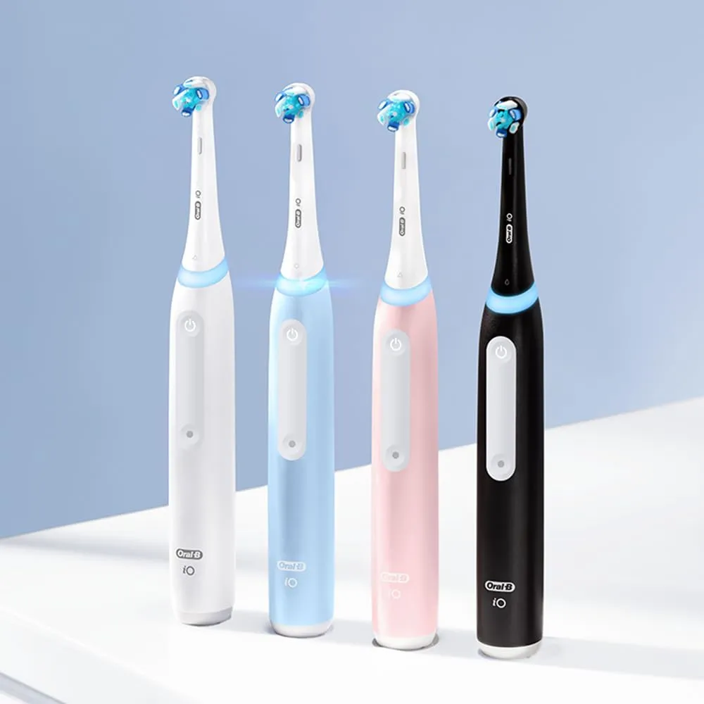
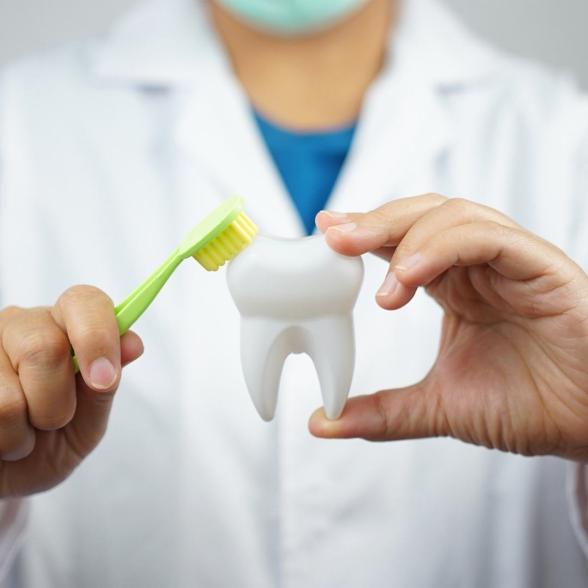
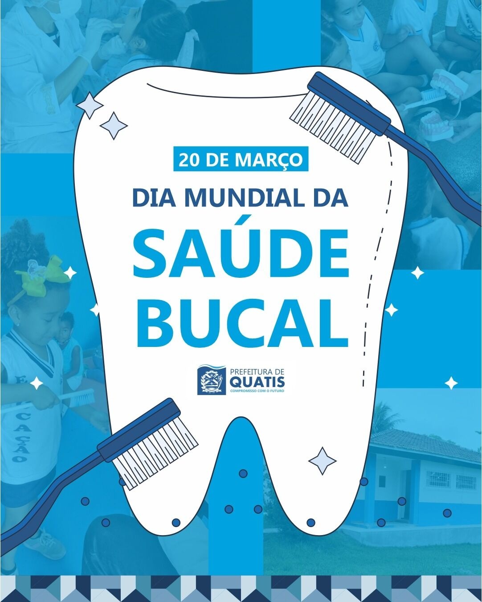
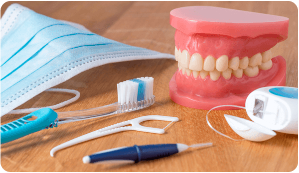
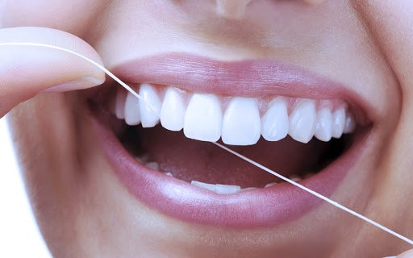

Escovação
A escovação regular remove a placa bacteriana, uma película invisível formada por bactérias, restos de alimentos e saliva, prevenindo a formação de tártaro, cáries e doenças periodontais.. Além disso, ajuda a manter o hálito fresco, evitando o mau odor causado pela proliferação bacteriana.A prática correta também protege o esmalte dental, prevenindo erosão e desgaste, e contribui para a saúde das gengivas, prevenindo gengivite e periodontite.A saúde bucal está diretamente ligada à saúde geral, podendo influenciar órgãos como coração e sistema respiratório.






Fio dental
O fio dental é um aliado indispensável na saúde bucal porque limpa os 40% da superfície dos dentes que a escova não consegue alcançar. Sua função principal é remover a placa bacteriana e os resíduos de alimentos acumulados entre os dentes e sob a linha da gengiva. O uso diário previne problemas graves como a gengivite (inflamação e sangramento gengival), a periodontite (que pode levar à perda dentária), o tártaro e as cáries interproximais, além de combater o mau hálito.